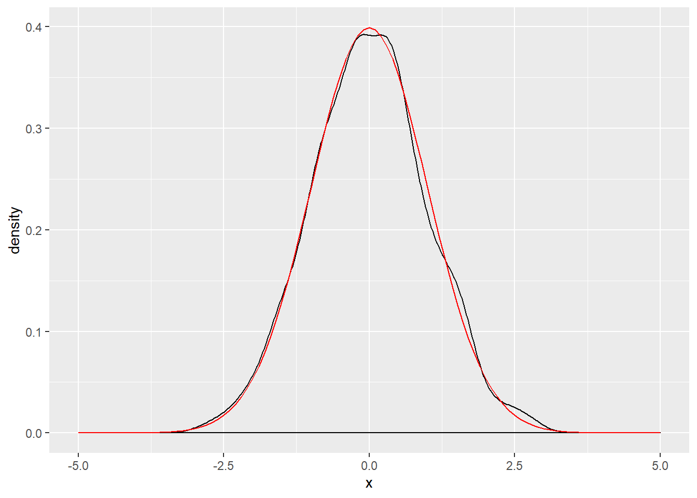

An Example R Markdown Document
(A Subtitle Would Go Here if This Were a Class)
Steven V. Miller
Pop Songs and Political Science
Sheena Easton and Game Theory
Sheena Easton describes the following scenario for her baby:
- Takes the morning train
- Works from nine ’til five
- Takes another train home again
- Finds Sheena Easton waiting for him
Sheena Easton and her baby are playing a zero-sum (total conflict) game.
- Akin to Holmes-Moriarty game (see: von Neumann and Morgenstern)
- Solution: mixed strategy
Rick Astley’s Re-election Platform
Rick Astley’s campaign promises:
- Never gonna give you up.
- Never gonna let you down.
- Never gonna run around and desert you.
- Never gonna make you cry.
- Never gonna say goodbye.
- Never gonna tell a lie and hurt you.
Whereas these pledges conform to the preferences of the median voter, we expect Congressman Astley to secure re-election.
Caribbean Queen and Operation Urgent Fury
Billy Ocean released “Caribbean Queen” in 1984.
- Emphasized sharing the same dream
- Hearts beating as one
“Caribbean Queen” is about the poor execution of Operation Urgent Fury.
- Echoed JCS chairman David Jones’ frustrations with military establishment.
Billy Ocean is advocating for what became the Goldwater-Nichols Act.
- Wanted to take advantage of economies of scale, resolve coordination problems in U.S. military.
The Good Day Hypothesis
We know the following about Ice Cube’s day.
- The Lakers beat the Supersonics.
- No helicopter looked for a murder.
- Consumed Fatburger at 2 a.m.
- Goodyear blimp: “Ice Cube’s a pimp.”
This leads to two different hypotheses:
- \(H_0\): Ice Cube’s day is statistically indistinguishable from a typical day.
- \(H_1\): Ice Cube is having a good (i.e. greater than average) day.
These hypotheses are tested using archival data of Ice Cube’s life.
Example R code
Example R stuff
summary(cars)## speed dist
## Min. : 4.0 Min. : 2.00
## 1st Qu.:12.0 1st Qu.: 26.00
## Median :15.0 Median : 36.00
## Mean :15.4 Mean : 42.98
## 3rd Qu.:19.0 3rd Qu.: 56.00
## Max. :25.0 Max. :120.00Slide with Plot
plot(pressure)
ggplot code
df <- data.frame(x = rnorm(1000))
x <- df$x
base <- ggplot(df, aes(x)) + geom_density() + scale_x_continuous(limits = c(-5, 5))
base + stat_function(fun = dnorm, colour = "red")Another Plot
